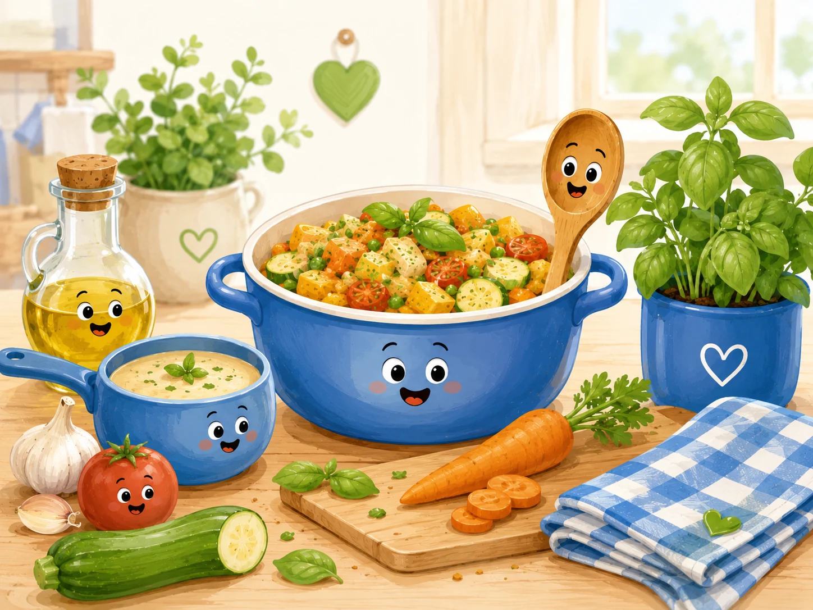

Template vierge de recette
Modèle vierge à copier pour créer une nouvelle fiche recette.
Cette fiche est un modèle technique. Elle sert de base pour créer une nouvelle recette complète.

⚖️ Adapter les quantités
🧺 Ingrédients avec quantités
Principaux
- g — Ingrédient principal à compléter
Secondaires
- g — Ingrédient secondaire à compléter
Optionnels
- g — Ingrédient optionnel à compléter
👩🍳 Préparation détaillée
- Étape 1 à compléter.
- Étape 2 à compléter.
- Étape 3 à compléter.
💡 Astuce anti-gaspi
Astuce anti-gaspi à compléter.
🔁 Variantes possibles
Variantes possibles à compléter.
🧭 Repères alimentaires
Ces repères sont indicatifs. Vérifiez les étiquettes, les traces éventuelles et les consignes propres aux produits utilisés.
Conservation : À compléter.
Réchauffage : À compléter.
📊 Valeurs nutritionnelles estimées
Estimation indicative et non officielle. Les valeurs nutritionnelles et le Nutri-Score estimé sont calculés à partir d’ingrédients génériques et des quantités de base. Ils peuvent varier selon les marques, les portions, les substitutions et les méthodes de cuisson. Ils ne remplacent ni les étiquettes des produits ni un avis médical ou diététique.
Non officiel
| Valeur | Par portion | Pour 100 g |
|---|---|---|
| Énergie | — kJ / — kcal | — kJ / — kcal |
| Protéines | — g | — g |
| Glucides | — g | — g |
| dont sucres | — g | — g |
| Lipides | — g | — g |
| dont saturés | — g | — g |
| Fibres | — g | — g |
| Sel | — g | — g |
📱 QR code
QR code vers la fiche en ligne.
https://recettesducoeur.github.io/recettes/00000000-000.html